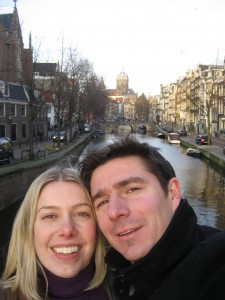
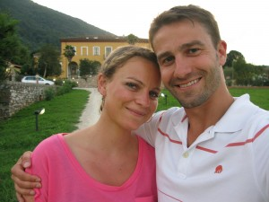

Michael met his Ellie while at university and they married in 2007. They have two sons, Jimmy and Max.

Tom met his Ellie in 2009 and they were engaged in 2011. Sadly, Ellie died of breast cancer in May 2012. You can read her story at www.writtenoff.net
In 2012 Tom and some of Ellie’s Friends established a charity called The Eleanor Rose Foundation with the aim of improving the lives of people living with cancer. 2le are proud to support the charity’s main initiative, Ellie’s Friends, and you can find out more about the work we do at www.elliesfriends.org.